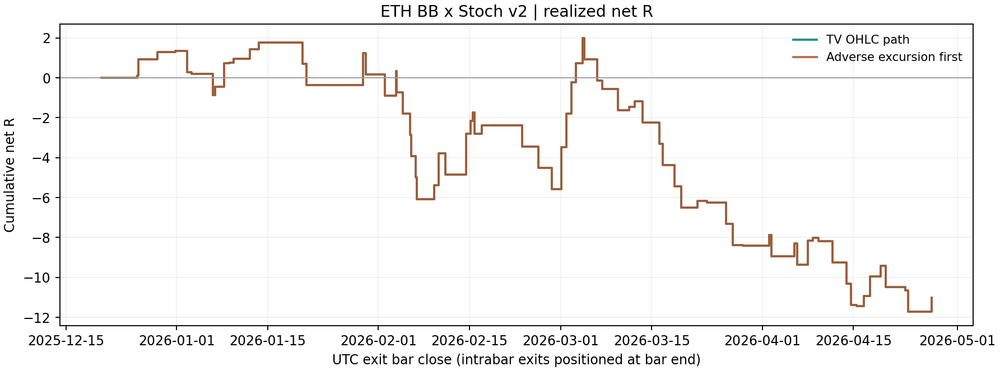

这版在本地可用历史上净亏损：75笔完整交易，净-11.02R，胜率45.33%，按R计算PF 0.70。 没有证明优于匹配随机入场。这次测试没有调整任何策略参数，V1门禁未加入。
按每笔完整仓位固定1 ETH归一化，毛盈亏-375.38 USDT，实际成交手续费349.39 USDT，净盈亏-724.78 USDT，现金PF 0.71。这是仓位归一化数字，不能当作账户收益百分比。
| 样本 | 完整交易 | 毛 R | 净 R | 净胜率 | PF（R） | 已实现回撤 R | 配对数 | 随机均值 R/笔 | 配对超额 R/笔 |
|---|---|---|---|---|---|---|---|---|---|
| v2 · TV OHLC 路径 | 75 | -6.02 | -11.02 | 45.33% | 0.70 | 13.73 | 74 | -0.116 | -0.033 |
| v2 · 先走逆向路径 | 75 | -6.02 | -11.02 | 45.33% | 0.70 | 13.73 | 74 | -0.116 | -0.033 |
| v1 · 指标稿（未回测） | N/A | N/A | N/A | N/A | N/A | N/A | N/A | N/A | N/A |
PF=盈利交易净R之和/亏损交易净R绝对值之和。净胜率在扣手续费后计算。回撤是完整交易结算后的累计净R回撤，不含持仓中的浮动回撤；固定1 ETH对应的最大已实现现金回撤为941.39 USDT。

前版v1只有指标实现，没有已冻结的经济结果；此处保留N/A，未补跑不同参数制造版本对比。两条路径仅是预先冻结的成交顺序敏感性检查，不能挑较好者作为正式成绩。
| 样本 | 完整交易 | 毛 R | 净 R | 净胜率 | PF（R） | 已实现回撤 R | 配对数 | 随机均值 R/笔 | 配对超额 R/笔 |
|---|---|---|---|---|---|---|---|---|---|
| 时间前半 | 34 | -1.20 | -3.46 | 52.94% | 0.79 | 7.84 | 34 | -0.115 | +0.013 |
| 时间后半 | 41 | -4.82 | -7.56 | 39.02% | 0.64 | 13.73 | 40 | -0.116 | -0.072 |
| 多头 | 42 | -4.39 | -7.18 | 40.48% | 0.67 | 10.04 | 41 | -0.155 | -0.019 |
| 空头 | 33 | -1.63 | -3.84 | 51.52% | 0.75 | 8.49 | 33 | -0.067 | -0.049 |
| 2025-12 | 4 | +1.62 | +1.35 | 100.00% | N/A | 0.00 | 4 | -0.096 | +0.433 |
| 2026-01 | 13 | -0.32 | -1.18 | 53.85% | 0.78 | 2.22 | 13 | +0.025 | -0.116 |
| 2026-02 | 20 | -2.32 | -3.65 | 40.00% | 0.71 | 6.40 | 20 | -0.234 | +0.051 |
| 2026-03 | 20 | -3.59 | -4.92 | 35.00% | 0.56 | 10.41 | 20 | -0.167 | -0.079 |
| 2026-04 | 18 | -1.41 | -2.61 | 44.44% | 0.67 | 3.85 | 17 | -0.028 | -0.123 |
时间切点固定为数据起点至研究终点的中点：2026-02-24T05:00:00+00:00。交易按信号确认时刻归组，跨月/跨切点持仓持续运行，不在分界强平。前后半只是同一固定规则的时间稳定性诊断，没有训练集或调参选择；月度表也不是独立重复试验。
| 最终退出原因 | 笔数 | 其中已平半 |
|---|---|---|
| 平半后保本 | 17 | 17 |
| 完整反向信号退出 | 19 | 19 |
| 初始止损 | 34 | 0 |
| 上移保护价已被越过 | 5 | 5 |
完整交易中41笔触轨平半，占54.67%；17笔尾仓在保本价退出。另外5笔触轨时已经亏损，移到入场价的保护单已经被当前价格越过，不能算成以入场价保本离场。保本只指尾仓价格回到开仓价，整笔是否盈利还取决于前半仓利润与手续费。最大连续净亏损6笔，平均盈利交易+0.77R，平均亏损交易-0.91R，平均持仓约22.48小时（按覆盖K线根数估计）。
每笔实际入场提前抽取5个同ETH、同方向、同UTC月、同因果波动桶的随机入场。波动桶使用14根平均真实波幅/收盘价，相对之前120个值的三分位；不使用后续走势挑样本。随机入场使用同一平半、保本、反向信号、3%止损和费用规则。
共抽取380个对照，其中2个边界未完成，没有补抽。完整配对74笔，未完整配对2笔。配对实单均值-0.1483R/笔，对照-0.1155R/笔，超额-0.0327R/笔。按5个UTC月整体翻转差值符号，单侧p=0.7500。该检验依赖月块差值的符号对称性；月份少，显著性分辨率有限。
全部预抽对照保留末端盯市的辅助超额为-0.0121R/笔；这是未完成仓位按最后收盘估值且只扣已发生费用的诊断值，不是假装已经清仓。对照事件可重叠，不构成可直接执行的单仓资金曲线。表中随机均值与超额仅在完整配对子集上计算，因此可能不等于全表净R/笔减去随机均值。
源码冻结提交：2feef5767e7d21b536dead1dddeac4845c132f93。Pine SHA256：d329a60a4b355ee47c530277e8f04aabab0290603ecc9ab49fcd1c8949eb01ea。只读前缀SHA256：fdc5e2fe276b3f6662b9891108bc7eae26243c465de3215c4b3174f717c22900。研究程序在任何价格读取前核对HEAD源码、配置、计划和Pine字节一致，receipt保存全部文件哈希。验证记录：{"focused_tests": {"command": "python3 -m pytest tests/evaluation/test_bb_stoch_replay.py tests/evaluation/test_eth_bb_stoch_study.py tests/test_spike_fanshen_exit.py -q", "passed": 23}, "broad_gates": {"command": "python3 -m pytest tests/boundaries tests/causality tests/parity -q", "passed": 463, "failed": 10, "skipped": 2, "causes": {"system_python_dependency_version_mismatches": 3, "existing_artifact_missing_source_commit": 5, "existing_migration_hash_mismatches": 2}}, "project_venv_recheck": {"command": ".venv/bin/python -m pytest tests/boundaries/test_ci_installs_from_requirements.py tests/evaluation/test_bb_stoch_replay.py tests/evaluation/test_eth_bb_stoch_study.py tests/test_spike_fanshen_exit.py -q", "passed": 45, "failed": 0}, "scope": "3 environment pin failures resolved by existing project venv; 7 unrelated registry/hash failures remain. No dependency or unrelated source changed. NumPy2.0.2 and pandas2.3.3 used for economic replay match project pins.", "independent_code_review": "Study sampling/serial/censor review found no blocker; engine synthetic fixes completed before source commit and first price read.", "native_full_ledger_parity": false, "economic_ledger_checks": 912, "holdout_consumed": false}。
cd /Users/zhangzc/fable-trading
python3 -m pytest tests/evaluation/test_bb_stoch_replay.py tests/evaluation/test_eth_bb_stoch_study.py tests/test_spike_fanshen_exit.py -q
python3 -m yoyo.evaluation.eth_bb_stoch_study
python3 -m yoyo.evaluation.eth_bb_stoch_report
python3 scripts/md_to_html.py analysis/p1_eth_bb_stoch_backtest_20260916.md --out-dir analysis/html
需保留原路径的本地CSV；数据未入git。当前源码必须与HEAD中冻结文件一致，修改后会拒绝读取价格。正式逐笔与全部随机对照保存于实验目录JSON/CSV。
先看本次收益和退出构成，决定是否继续研究。V1门禁、其他止损或BB/Stoch参数属于新版本，需Owner指定后单独冻结；本轮未自动尝试。若要与TradingView逐笔核对或扩展历史范围，应作为下一步独立验收；任何holdout使用仍须明确授权。